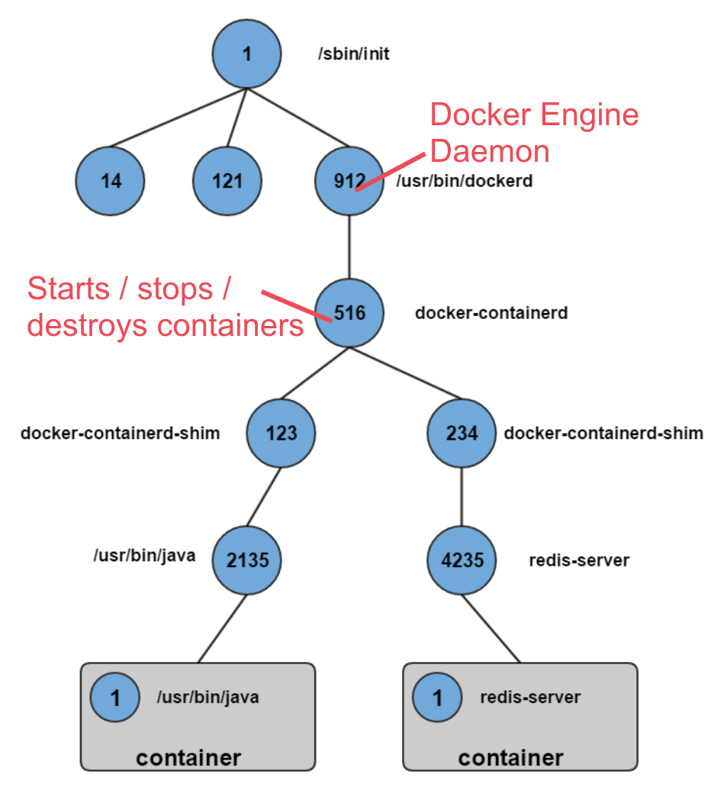

Introduction to Containerization with Docker
Container Isolation

- Containers are formed by namespacing resources from the host machine - PID tree, kernel, network etc
- Command specified by `docker run` is always PID 1 inside the container; will have a higher PID on the host machine but is part of the same PID tree
- Container only runs as long as the process specified in `docker run`.
- `containerd` is in charge of starting, stopping and destroying containers; built on top of runc (https://runc.io) and `libcontainer`.